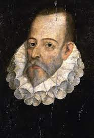
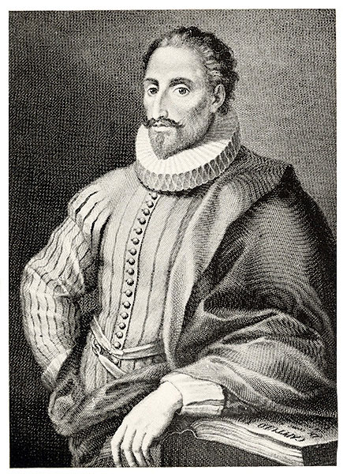
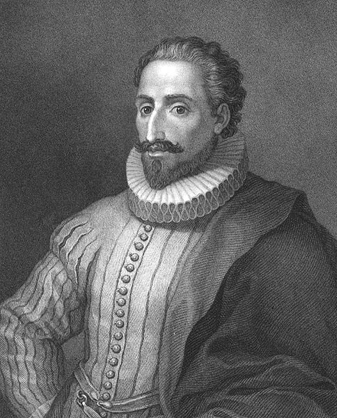

Miguel de Cervantes

Biografia
Desde el siglo xviii está admitido que el lugar de nacimiento de Miguel de Cervantes fue Alcalá de Henares, dado que allí fue bautizado, según su acta bautismal, y que de allí aclaró ser natural en la llamada Información de Argel (1580). El día exacto de su nacimiento es menos seguro, aunque lo normal es que naciera el 29 de septiembre, fecha en que se celebra la fiesta del arcángel San Miguel, dada la tradición de recibir el nombre del santoral del día del nacimiento. Miguel de Cervantes fue bautizado el 9 de octubre de 1547 en la parroquia de Santa María la Mayor.
El padre del escritor era Rodrigo de Cervantes (1509-1585), casado con Leonor de Cortinas, de la cual apenas se sabe nada, excepto que era natural de Arganda del Rey.11 Los hermanos de Cervantes fueron Andrés (1543), Andrea (1544), Luisa (1546), que llegó a ser priora de un convento carmelita; Rodrigo (1550), también soldado, que le acompañó en el cautiverio argelino; Magdalena (1554) y Juan, solo conocido porque su padre lo menciona en el testamento.

El apellido Saavedra, en opinión de la historiadora Luce López-Baralt, y que el autor comenzó a utilizar tras su cautiverio, viene de «shaibedraa», que en dialecto árabe magrebí se pronuncia casi como en español y significa «brazo tullido o estropeado», por lo que Cervantes en Argel pudo ser llamado «shaibedraa», a saber, «manco». Es además un apellido corriente en Argelia desde hace siglos.12 Por el contrario, la hispanista María Antonia Garcés atribuye la adopción del apellido gallego Saavedra a la reinvención que Cervantes hace de sí mismo al retorno de la esclavitud; es nombre que él mismo otorga al héroe de su drama El trato de Argel, y a los protagonistas de su El gallardo español y de La historia del cautivo (capítulos 39—41 de Don Quijote); ha sido Gonzalo Cervantes Saavedra un lejano pariente, también veterano de Lepanto y escritor, y cuya vida tuvo singulares paralelismos con la suya; además, la prominente familia Saavedra (o Sayavedra) de Sevilla, quienes pelearon contra los moros por cientos de años en la frontera, podría haberle resultado emblemática a Cervantes, quien pudo verse a sí mismo como el descendiente moral de Juan de Sayavedra, héroe medieval celebrado en romances de gesta y también apresado por los moros.
Según Américo Castro, Daniel Eisenberg y otros cervantistas, Cervantes poseía ascendencia conversa por ambas líneas familiares; su padre era cirujano, su abuelo, abogado y su bisabuelo, trapero. Por el contrario, su último biógrafo, Jean Canavaggio, afirma que dicha ascendencia no está probada, en comparación con los documentos que apoyan esta ascendencia sin lugar a dudas para Mateo Alemán; en todo caso, la familia Cervantes estaba muy bien considerada en Córdoba y ostentaba allí y en sus cercanías cargos importantes.
Sus abuelos paternos fueron el licenciado en leyes Juan de Cervantes y doña Leonor de Torreblanca, hija de Juan Díaz de Torreblanca, médico cordobés; su padre, Rodrigo de Cervantes, nació en Alcalá de Henares por casualidad: su padre tenía entonces su trabajo allí. Lo educaron para ser cirujano, oficio más parecido al antiguo título de practicante que a nuestra idea de médico. Don Rodrigo no pudo seguir estudios continuados no solo por su sordera, sino por el carácter inquieto e itinerante de su familia, que llegó a moverse entre Córdoba, Sevilla, Toledo, Cuenca, Alcalá de Henares, Guadalajara y Valladolid, que se sepa; sin embargo, aprendió cirugía de su abuelo materno cordobés y del padrastro, también médico, que lo sucedió, aunque nunca llegó a contar con un título oficial. Hacia 1551, Rodrigo de Cervantes se trasladó con su familia a Valladolid. Por deudas, estuvo preso varios meses y sus bienes fueron embargados. En 1556 se dirigió a Córdoba para recoger la herencia de Juan de Cervantes, abuelo del escritor, y huir de los acreedores.

No existen datos precisos sobre los primeros estudios de Miguel de Cervantes, que, sin duda, no llegaron a ser universitarios. Parece ser que pudo haber estudiado en Valladolid, Córdoba o Sevilla
En 1566 se estableció en Madrid. Asistió al Estudio de la Villa, regentado por el catedrático de gramática y filoerasmista Juan López de Hoyos (que en 1569 publicó un libro sobre la enfermedad y muerte de la reina Isabel de Valois, tercera esposa de Felipe II). López de Hoyos incluye en ese libro dos poesías de Cervantes, a quien llama «nuestro caro y amado discípulo», consideradas por algunos cervantistas sus primeras manifestaciones literarias. En esos años juveniles se documenta su afición al teatro: asistía a las representaciones de Lope de Rueda, como afirma en el prólogo que puso a sus Ocho comedias y ocho entremeses (1615): Y, según declara en la segunda parte del Quijote por boca de su personaje principal, en su juventud «se le iban los ojos tras la farándula» (Don Quijote, II, 12).